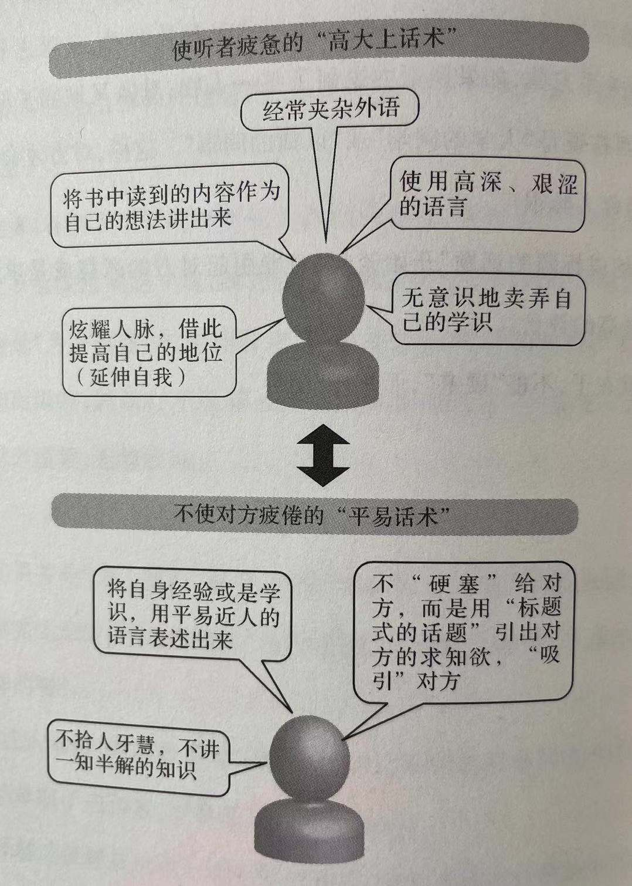

第一讲 学习世界推崇的"假说思考"
第二课 兼顾价格与价值
——如果没有价值，白给也送不出去
8 因此在如今的日本，价格低廉的商品已经无法打动消费者。必须让顾客觉得物有所值，认为商家给出的价格是"公平价格"。
9 在经济不景气的时期，滞销商品即便打对折也仍然卖不出去。说得极端一点儿，消费者觉得"白给也不要的商品"，真的是商家白送也送不出去的。
第三课 市场依"铅笔型"而动
——从"富士山型"到"茶杯型"再到"铅笔型"
13 一旦某件商品掀起购买热潮，马上就会一跃至"过热"，并被媒体大肆炒作。但好景不长，该商品又会迅速地被消费者忘却，购买热潮也会完全转向其他的商品。这种模式在很多曾经的热销商品身上都有体现。当今某些偶像突然蹿红、人气暴涨，也是这种模式的一个象征性体现。
第四课 市场依"直觉"而动
——"三九天的25℃"算不算热
16 市场是依靠皮肤感觉而动的，但身处社会组织中的卖家却时常会忘记这种直觉。越是自认为对市场了若指掌、是销售方面的行家里手的人，就越容易有这种倾向。
17 通过"以旧换新"活动，这些原本不会再穿的旧衣物产生了新的价值。既然如此，就用来换购新衣物吧！这是人之常情，也是一般心理。
第五课 框架效应
——表现形式不同，销量也不同 19 所谓行为经济学，是着眼于探求心理、情感与人们的判断、行动的深层关系，并将其归纳总结并形成理论的实用经济学，也常被人称为情感经济学。而近几年来，行为经济学更是突然成了众人瞩目的焦点。
第六课 价格心理学
——较之"极端价格"，"中间价格"更受欢迎
23 一开始，我们在卖场成列了18000日元和38000日元这两种定价的羽绒被。理所当然的，18000日元的羽绒被销量很好，而38000日元的羽绒被则几近无人问津。但是当我们在卖场中又加入了一款售价为58000日元的羽绒被后，38000日元的羽绒被一跃成了三种羽绒被里销量最高的，销售额也因此有了大幅增长。
24 ——在有多个选项的时候，用一种事物比较其他事物从而作出选择这种行为，在经济学中被称为"择优"。古典经济学认为，一个人的择优在任何条件下都不会改变，然而现实却并非如此。仅仅是把选项由两个增加为三个，就会出现"择优逆转"现象。
第七课 "假说与实证检验"的工作方法
——潜在需求深藏于顾客的心理
29 所谓假说，就是对尚不明确的明天的顾客需求进行一定的假设。与单纯的随性乱猜不同的是，这种假设是建立在一定的信息基础之上的，必须先取得一些让人在一定程度上了解顾客需求的信息，才可以进行假设。我们称这种信息为"先期信息"。
第八课 使机会损失"可视化"
——经营最大的目标在于"使机会损失最小化"
33 如果习惯于进行假说与实证检验，人们就会更加关注机会损失，商品的销售额也会增长，使废弃损失最小化。不仅如此，如果一次获得成功，人们想要继续建立假说的想法就会更加强烈，变得更有挑战意识，使经营的稳定均衡发展成为可能。
第十课 顾客至上的"谎言"
39 而我之所以提倡"站在客户的角度"，而非"为了顾客"，是因为有些上架所谓的"为了客户"，其实多是根据过去的经验，站在卖方的角度武断认为"顾客需要这样的东西"、"我们家的顾客是这样的"。
第十一课 客观认识自己的"元认识"
——从"另一个自己"的角度审视自己 45 真正的专家还会怀着否定的态度来审视过去的经验，并且勇于挑战新的事物。想要做到这些，就需要从"另一个自己"的视点来审视自己。
第十三课 钓取信息的"关键之钩"
——收集信息要从"单钩垂钓"改为"延绳钩"
53 无论是谁都会自然地记得自己感兴趣的信息。就如同年轻人由于对演艺圈的信息感兴趣，自然而然地会"钓起"很多相关信息，对工作也是如此。
54 不要只关注于一种信息，而是要着眼于各种关联信息，看到事物的全貌。持"钩"多的人渐渐地就能够进行"系统化思考"，信息会转化为"生动的记忆"。
第二讲 学习高成功率的"承担风险的能力"
第十四课 挣脱厌恶损失心理
——损失比获利更牵动人的神经
63 人们不会把得与失放在同一架天平上衡量，同样的金额，失去比得到更容易牵动人的神经。所以，人们经常会以回避损失为出发点采取行动。这在行为经济学中被称为"厌恶损失"。
第十五课 挣脱时间贴现心理
——"长期利益"高于"眼前利益"
68 铃木：例如，不要一味地关注老客户，还要努力开拓有未来发展前景的新客户；又或者，比竞争对手先一步进入暂时还看不到利润的市场。鼠目寸光是不会有明天的成长的。
第十七课 阴阳两面思考
——消费者的"便利"就是商家的"麻烦"
75 铃木：注意，经营者必须始终记住，绝大多数情况下，对商家来说划算的事情往往不利于消费者；而对消费者有利的事情，也常常让商家觉得不划算。
. 买方市场对商家的考验就是：能否看穿事物的两面性，并以消费者的意愿为优先，修正自身既存的经营方式或架构。这种修正对商家来说可能不划算，需要新的投资，会产生新的成本，并伴随着风险。但只有敢于承担风险进行革新的企业和商店，才能够获得顾客的支持。
第十八课 看清市场的"动态视力"
——今天的100分在明天只值80分
79 消费者只有在感受到高于期待值的商品价值时，才会觉得满足。这一期待值不会一成不变，而是不断增长的。以前觉得"美味的东西"，在下个阶段就已经让他们觉得"理所当然"，最后还会变得"让人厌倦"。
第二十课 市场的"不毛地带"
——探究"优质"与"亲民"之间的空白地带
第二十一课 莫要依样画葫芦
——"不学别人最简单"
91 效仿最大的问题就在于它一定没法比真货做得更好，没法跻身一流行业，也永远当不了No. 1。 星巴克即使急速扩张，覆盖更广的区域，在亲民方面却仍然无法与麦咖啡抗衡，正是由于这一战略是效仿他人。
. 舒尔茨成功的要因有其多重性，但书中令我印象最深的，是舒尔茨不断直接与星巴克员工们对话，要求员工们不断向改革和创新挑战，并试图找回此前丢失的团结与信任。他高举双手呼吁员工"要不断努力，哪怕双手沾满泥土"，而星巴克的员工们也自发制作拍摄了沾满泥土的手的海报，将它贴在了办公室里。
92 所以我们再来说说，“单纯的劳动”与“真正的工作”有哪些不同。“单纯的劳动”是在预先知道答案的情况下对着答案照做；而真正的工作则是每个人负起自己的责任，挑战问题，找出答案，解决问题。
效仿就是在已经知道答案的情况下，踩着人家的脚印左转右拐。哪怕是自以为在独立工作，也不过是做了些体力劳动而已。
而摈弃效仿，想办法与别人产生差别的过程，才需要真正的工作。
其实，人们被委以重任的时候会自然而然地感到工作的价值，积极行动起来。
第二十二课 积酿战略
——精挑细选才能找到新的价值
97 ——史蒂夫·乔布斯在iPad的新品发布会上曾经这样说过："在推出最先进的科技产品时，必须要让用户直观感受到这是使用便捷、令人愉快的产品。不能让客户来适应产品，而是必须要让产品来适应顾客、接近顾客才行。"
第二十三课 挣脱市场饱和
——不想市场饱和，就要及时响应变化
100 不能只顾品类丰富齐全就好，卖家要以明确的经营理念为基础，对卖场的商品进行筛选安排，制造出自己的品牌价值，并准确地传达给消费者。不断重复这一行为的过程中，就产生了一个必须不断进行自我革新的时代。
101 ——过去商家从自己的角度考虑，总认为只要提供"更多的价值"就快有万事太平，而现在，商家要站在消费者的角度考虑，努力提供"更好的价值"和"更合适的价值"。如何转换思维，以新的理念重新定义自身的经营方向，关乎企业存亡。
第二十四课 成功掌握在少数人手中
——当今时代，不去挑战反而风险更高
105 可现如今，昨天正确的回答未必是明天正确的答案。所以人们必须要向前踏出一步来挑战新事物，找到自己的答案才行。
——铃木先生的这种想法常被人称为"逆向经营"，但更正确的说法应该是即便遭到反对也要坚持的"不妥协经营"吧。
铃木：我之所以不会轻易地向周围的反对声妥协，是因为 这些唱反调的人提出的理论往往并没有正反面反对我所想要挑战的事物的价值。
106 假说产生于未来的可能性，无法预见未来的人只会反对说“那不过是假设而已!”然而，假说并非栖身于过去经验的延长线上，所以反对者无论提出多少经验谈，都无法否定假说。只要是自认为有价值去做的假设，就该力排众议去做。
大家一致反对的事情大抵都会成功，而大家都赞成的事情往往会走向失败。过去的延长线上充满了风险，挑战新事物才能规避风险，一成不变是无法创造未来的。
只要变换视角，从着眼过去转变为看向未来，就能找到前进的方向。只要坚定不移地走下去，反对者的声音就会消失在遥远的后方。
第二十六课 "学习"无用
——假说是"学"不来的
114 专家反对的事业为什么能够成功呢？因为他们无法从现有的知识中找到答案。
人们很容易就会反对自己无法解答的事物。
115 通过咨询"找不到答案的人"来"学习"，是没有意义的。
第二十七章 摒弃完美主义
——没有必要一开始就做到"完美"
116 开始一项新事业的时候，最重要的就是找出必要条件。
而在寻找必要条件的时候必须要记住，我们没必要一开始就达到完美。
117 可是当时我这样命令：绝对不能在最开始就把与日本一样的系统引进中国的门店。所以中国的门店刚开起来的时候，员工只能一边手动整理货架（摆在前面的商品卖出去后，将货架后面的商品按顺序挪到前面，与价签对齐）一边手写记录商品的销售情况。
第三讲 社交恐惧也能成为谈判达人
第二十八课 将对方的不安转化为期待的"心理论法"
——想要说服他人，论法远重于话术
123 铃木：商务谈判的重中之重，就是决定成败的并非"话术"，而是 把对方的不安与不满转化为期待的"论法"。
124 人们一般不会将利益与损失放在同一架天平上衡量，对损失的反应要远大于利益。
第二十九课 了解对方想法的"打墙话术"
——坦承自身想法，引出对方的真意
128 想要从对方那里获取真正有价值的信息，就必须坦率地说出自身的想法，进行双方面的讨论。要做到这一点，就必须要有自己独立的观点和看法。
. 向谈话对象表达自身看法的时候，最重要的就是始终坚定自己的想法不动摇。比如我的观点之一，就是为了应对市场变化，必须不断挑战新事物，这样才能实现均衡发展扩大这一目标。我提到的这一观点从来没有改变过。
任你怎样巧舌如簧，常常改变说法的人是无法获取任何人的信任的，与顾客谈判时尤其如此。
130 一旦将商品穿到身上，内心计算损益的基准就变成了试穿时的状态。脱掉身上的商品放弃购买，就会强烈地感到损失带来的"痛楚"。此时，如果卖家能够表达出自身的看法，无异于是在顾客身后推了一把。
第三十课 不使对方感到疲倦的"平易话术"
——大讲外语只会使对方感到疲惫
133 可是，将引用内容当成自身的想法来表达，是毫无说服力的，这种情况也只会让交谈对象觉得疲倦、无趣。
. 心理学上这种心理为"延伸自我"，即通过自身所拥有的的事物来炫耀自我，可这种事对于交谈对象来说根本就无所谓。自顾自地延伸只会让听者觉得无聊透顶。
134 铃木：在人前讲话时，最重要的就是将自己平时所思所想和所知所为，以尽可能简单明了的语言，平易近人地表达出来。拾人牙慧或讲解自己也一知半解的知识，是无法让对方理解你的意思的。所言之物如果不是自己的东西，你就会紧张，也不可能会讲好。
第三十一课 给人留下印象深刻的"修辞学"
——滔滔不绝一小时，不如简简单单一例子
138 思考要用何种方式来表达，才能将想要传达的内容正确地传达给对方，对方认同，这叫做沟通。
——所谓表达，就是要用所有人都听得懂的方式来进行说明。但偶尔无论说出多少极具说服力的话语，对方也不一定会认同。可是如果举例来说明的话，即便是只让人明白个大概，也能传达自己的意思。
139 ——首先展现出与以往的常识不同的构想，给人留下深刻印象，引起对方的兴趣，再用对方容易接受的事例来进行说明。谈话的说服力就来源于这些具有故事性的事例中。
第三十二课 亦"毒剂"亦"良药"的"数字表达法"
——越简单合理的数字越可疑
142 在进行某项说明的时候，我们都爱讲"一言以蔽之"之类的说法，听者也爱听这种总结式的说明。明明是无法用"一言"以"蔽之"的事情，人们似乎以为用了这种表达方式，就能概括起来了。
第三十三课 在头脑中制作"同样的模板"
——共享"语言背景"，使沟通力倍增
145 每一句话都含有其背景意义。谈话的双方不能顺畅的沟通，是因为各自的"语言背景"并不相同，存在出身、年龄、地位等多方面的差异。
146 因此，踏出新的一步，使对方目光转向经营许可的根本——"将7-Eleven"这一品牌财富共同发展壮大"之后，双方对这个词的"语言背景"产生了共识，从而达成了谈判。
. ——比较常见的情况是，相互之间没能理解语言的背景，但却对此浑然不觉。
上司向下属指派了一个任务，下属回答说"我明白了"，但却没有执行。最后做出一副责任不在自己的表情说："那件事竟然是这个意思吗？"这种事一旦多次发生，工作就无法正常进行。发生这样的情况，其实信息的传达方也是有责任的吧？
. 人的行为始于自觉。倘若眼前摆着喜欢的食物，不勉强他也会主动吃。这是因为人自觉地知道，吃下美味的食物会觉得心情愉悦。
147 下属不去执行工作内容，是因为不知道自己应该做什么。
无论面对怎样的难题，只要本人能够意识到解决问题后失去一定会往好的方向发展，那他就会自发地行动起来。从另一方面来讲，要让对方在没有自觉的时候理解工作内容并行动起来，就非常困难了。所以如果上司缺乏贯彻力，就什么都不会改变。
148 人与人之间的交流也可以适用这一原理。如果想要传达的内容与对方脑海中的模板一致，"传达"与"明白"就达成了一致。双方对语言的理解一致，才会产生行动的自觉。
. 要明白自己每次的表达方式在哪里有欠缺，并在下一次的表达中改善。倘若知道对方不明白自己意思的缘由，就试着转变议论的方法。即便要说的基本内容相同，也有必要改变表达的方式。
第四讲 激发下属能力的"管理能力"
第三十四课 挣脱自我正当化
——对下属的"自我正当化"不能掉以轻心
153 铃木先生说过： "人们常会在失败的时候，炮制出容易使自己接受的理由。"成功的时候便自居有功，失败的时候就会归咎于自己之外的因素，试图逃避责任。这种倾向在心理学中被称为"自利性偏差"，也是公司中常见的现象。
. 这是因为人们会条件反射性地保护自己。当发生不利于自己的情况时，明明真正的原因在于自己，需要从根本上改变工作方式来解决问题，有些人却由于解决方式不利于自己而把矛头指向别处，声称"这都是××的错"。
155 所谓教育，并不是教授人"答案"，而是使下属萌生"正确的工作意识"。
第三十五课 Bad News First
——尽早报告坏消息
158 为了避免发生重大问题，确实地掌握真实的信息，需要上司具备"探究心"。
过分"合理"的报告或都是顺耳的消息的报告，总会让人觉得有些奇怪。这个时候，上司就要对抱有疑问的地方进行彻底的询问和分析。
第三十六课 "警察型"还是"教师型"
——上司能否代替下属"作答"
161 上司为下属布置课题的时候，自己必须要有能够解决这一课题的能力。换句话说，只有能够给出答案的人，才能够当上领导。
163 当一个人被委以重任时，他就会感到做事的价值，并勇于向前迈出步子，进行挑战。这其实也是人的一种本质。
而上司的职责，就是引导出下属的这种挑战心。
. 以我的做法，如果下属丝毫不进行挑战，只是不断重复同样的失败，我就会非常严厉的批评他。如果下属进行了挑战却失败了，我不仅不会批评他，还会承担全部的责任。这样的上司才能称得上"优秀的教师"。
第三十八课 排除冗余步骤，使工作效率倍增
——工作量大也不可轻易增员
169 一份申请书到达公司最高层之前，要在各部门间辗转多次，盖上很多"同意"的印章。而这个繁杂冗长的过程中不会产生任何新的企划，也不会产生新的附加价值。
第三十九课 短期集中&多样化应对
——花时间未必能得到更好的成绩
172 除此之外，能在有限的时间内集中精力专注于一件事，在头脑中整理遇到的问题，思考如何生产新的价值，抓住事物的本质作出明确的判断，是评价员工能力是否优秀占比重最大的部分。
173 如果任命很多负责人，允许员工花费很长时间，职责就会细分化，以"难得搬一次家"这样善意的理由，使工作内容不断增加，而与本来目的毫无关系的成本也很可能会水涨船高。
第五讲 学习具备贯彻力的"领导才能"
第四十课 绝对价值与相对价值的差异
——"真正的竞争对手"是不断变化的客户需求
180 要让他们明确认识到"真正的竞争对手"到底是谁。对于集团中的所有员工，我一直都在反复强调："我们的竞争对手不是其他公司， 真正的竞争对手是瞬息万变的客户需求。 "
第四十一课 将理想转化为现实的"驱动目标"
——为何要"使机会损失最小化"
184 作为企业经营者，除了要使公司业绩不断提升，还有另一项重要职责： 要在让公司工作的员工觉得能在这里工作真好，让有工作往来的公司觉得能与这家公司合作真好。
185 不过，只是揭示理念，员工们还是不会明白具体哪些活动能够达到应对变化的效果，还是会觉得困惑。为了使一线员工积极行动起来，经营者这时就要明确"使机会损失最小化"这一目标。
186 铃木流经营学告诉我们，企业经营所需要的不只是理念与愿景，还需要与现实密切结合的驱动目标。
第四十二课 挣脱传话游戏
——分享信息要通过直接沟通
190 ——沿着自上而下的线路传达信息时，即使最高层领导说的是"就算有困难也要挑战！"如果领导层之外的人对此持否定态度，信息到了中途可能就已经演变成了"非常难办""可能会失败"等消极内容。而信息内的这种信号不断增加，下达到第一线时，YES已经变成了NO，白色也变成了黑色。
第四十三课 从"讨价还价"到"协同合作"
——与交易对象站在对等的立场上组队
194 ——所谓"讨价还价"，是以市场中的"竞争"为前提的，而卖方与厂商共同创造价值的"共同协作"，则可以说是一种"共创"关系。市场中必须要有竞争，但如果被眼前的竞争迷住了双眼，就会脱离顾客的真正需求，丧失顾客的支持。
第四十四课 领导者的"贯彻力"
——妥协就是原地踏步的开始
198 铃木：相互妥协、但求无过的消极主义能带来一时的轻松。但长此以往，堆积下来的问题总会爆发，造成无可挽救的状况。而到了这一步时，企业往往已无力回天，组织开始分崩离析。
199 座席小桌子上残存着咖啡污渍的飞机，引擎的维护情况可能也是马马虎虎。
第四十五课 领导的"决断力"
——人一旦抱有执着，就会犹豫不决
200 铃木： 所谓决断，反过来说，就是决定到什么程度才能妥协。 人都有两面性，一面是遇到困难时自保的本能，另一面是面对有尝试价值的项目时，无论多困难也要想挑战的欲望。
201 有些人在问题与己无关的时候认为"应该挑战"，但与己相关时就会采取保守姿态，这就是人性的体现。在这种时候，何时进行决断，到何种程度才妥协，不仅决定了一个人的工作，也决定了他的活法。
如果想要选择不断挑战的活法，就不能向自己妥协。
从我个人来讲，我并不是一个善于计算的人。如果前进的道路上横着一棵倒下的树，很多人会选择置之不理，绕路走开，但我却很难做到假装看不见。
. 这种能力之所以没能在关键时刻发挥出来，是由于人对其他某些事过于执着不愿放手罢了。
202 但无论过程如何，既然是自己决定的事情，就要自己负起责任来。
正因此，我反而对一直待在这家公司里并不抱有什么执着，该说的话就说，该挑战的就挑战。
领导者一旦开始想要保护自己，组织和团队就会开始走向衰败。
第四十六课 "以人为本"的经营
——用突破性（break through）思维，打破壁垒
204 第一点正是我之前重复多次的内容——破坏现有的观念，挑战新事物，想要开发新事物的欲望与能力。挑战新事物的时候是不可能从过去找到答案的，能够获得答案的唯一地点，是未来的世界。
205 就算不善言辞，只要与对方进行沟通，共同思考，双方在心理上就可能达成共识。我们不断追去的，正是包含人性交流范畴的全面的交流能力。
通过相互交流可以激发人的挑战欲望，通过未来的可能性引出现在的应做之事，不断突破壁障。企业的强大就由此而来。
207 即使遭到周遭多数人的反对，未来前景饱受质疑，我们也总是不断在挑战。因为只要不去挑战，就没有创新。顾客需求在日新月异地发生变化，但其本质是恒定不变的。
第四十七课 非凡是平凡的积累
——没有"贯彻基本"，就无法"应对变化"
211 ——经营的铁则是"坦率地思考，做理所当然之事"。如果说这就是铃木流的经营的强大之处，我们可以说是在此回归了最质朴的原理吧。一起参与了这47课的铃木先生以及各位读者，非常感谢。